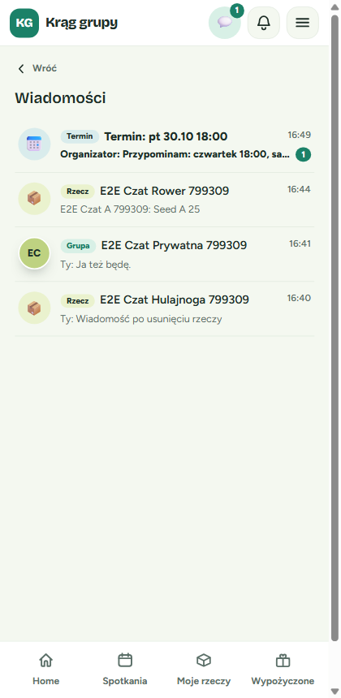
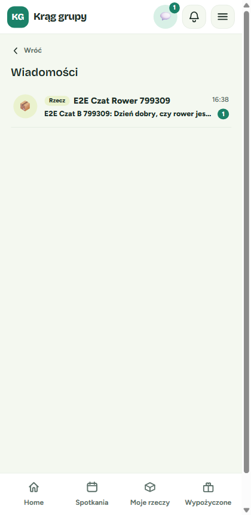
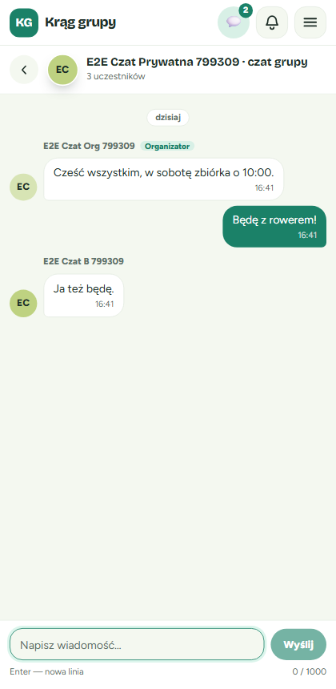
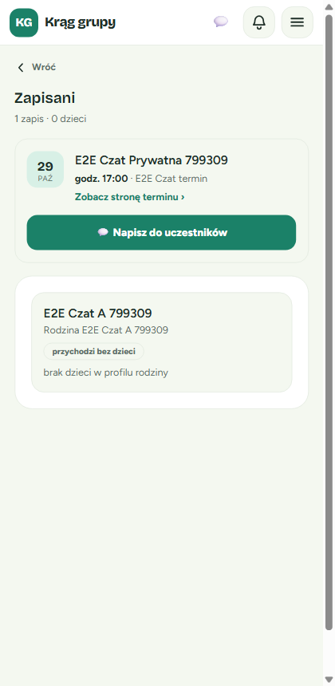
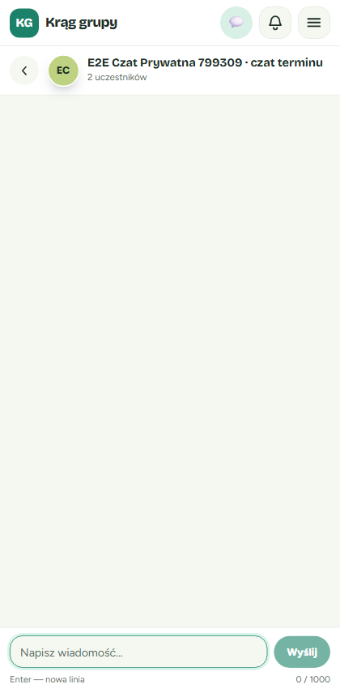
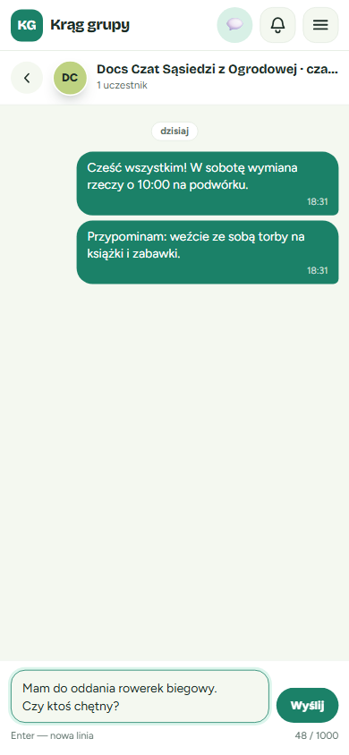
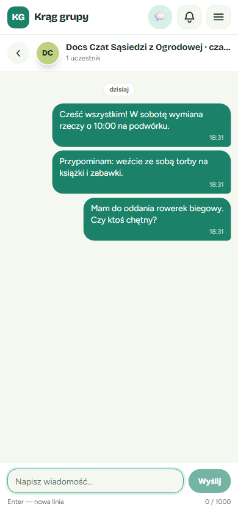
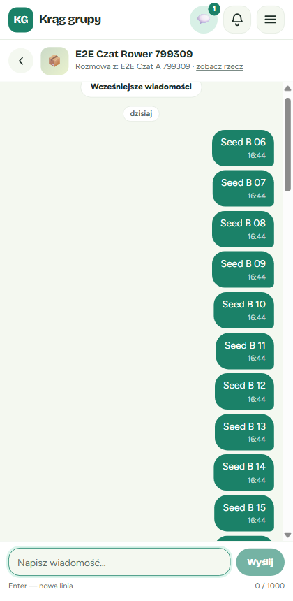
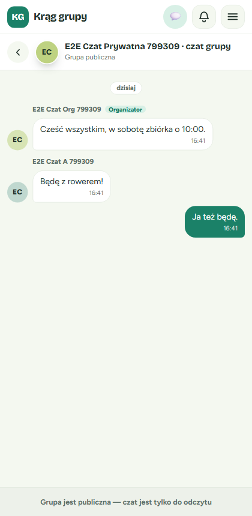
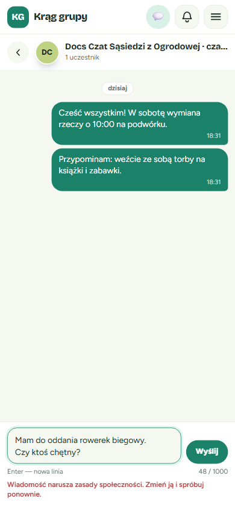

1. Gdzie są wiadomości
Ikona 💬 w górnym pasku
W górnym pasku, tuż obok dzwonka z powiadomieniami, jest ikona 💬. To Twoja skrzynka wiadomości.
- Zielona liczba na ikonie pokazuje, ile wiadomości od innych osób jeszcze nie przeczytałeś.
- Gdy nieprzeczytanych jest więcej niż 9, zobaczysz „9+”.
- Gdy wszystko jest przeczytane, liczby nie ma.
- Licznik odświeża się sam mniej więcej co 20 sekund.

Skrzynka „Wiadomości”
Dotknij ikony 💬. Otworzy się strona „Wiadomości”, czyli lista wszystkich Twoich rozmów. Na górze są te, w których ostatnio coś się działo.
| Etykieta | Co to za rozmowa | Ikonka |
|---|---|---|
| Rzecz | Pytanie o konkretną rzecz | 📦 |
| Grupa | Czat całej prywatnej grupy | Inicjały grupy |
| Termin | Czat jednego spotkania, np. „Termin: pt 30.10 18:00” | 📅 |
Pod nazwą rozmowy widać początek ostatniej wiadomości i to, kto ją napisał:
- „Ty:” to Twoja wiadomość;
- „Organizator:” to wiadomość od organizatora grupy;
- w innych przypadkach widać imię lub nazwę nadawcy.
Po prawej jest godzina albo dzień ostatniej wiadomości, np. „12:41”, „wczoraj”, „pon” albo „12.10”.
Pusta skrzynka? Zobaczysz napis: „Nie masz jeszcze rozmów. Zapytaj o rzecz na jej stronie albo napisz na czacie swojej grupy lub terminu.” Kolejne rozdziały pokazują, jak zacząć rozmowę.

2. Jak zapytać o rzecz
Gdy widzisz u kogoś rzecz, która Cię interesuje, możesz napisać do jej właściciela. Zapytasz na przykład, czy jest jeszcze dostępna, w jakim jest stanie albo kiedy można ją odebrać.
- Otwórz stronę rzeczy. Wejdź na stronę rzeczy innej osoby. Pod kartą ze statusem (np. „Dostępna”) zobaczysz przycisk „💬 Zapytaj o rzecz”.
- Dotknij „Zapytaj o rzecz”. Otworzy się rozmowa z właścicielem. Na górze widać:
- nazwę rzeczy;
- linię „Rozmowa z: imię właściciela”;
- link „zobacz rzecz”, który zabiera z powrotem na stronę rzeczy.
- Napisz pytanie i dotknij „Wyślij”. Np. „Dzień dobry, czy rower jest jeszcze dostępny?”. Twoja wiadomość pojawi się po prawej stronie, na zielonym tle. Odpowiedzi właściciela pojawiają się po lewej.





Na swoich rzeczach nie ma przycisku
Na stronie własnej rzeczy przycisk „Zapytaj o rzecz” się nie pokazuje. Nie da się zapytać samego siebie. Zamiast niego widzisz przycisk „Edytuj”.
Co, jeśli rzecz została usunięta?
- Rozmowa już trwa: zostaje w skrzynce. Przy nazwie rzeczy pojawia się dopisek „(usunięte)”, a link „zobacz rzecz” znika, bo strony rzeczy już nie ma. Nadal możecie do siebie pisać.
- Rozmowy jeszcze nie było: na stronie usuniętej rzeczy nie ma przycisku „Zapytaj o rzecz”, więc nowej rozmowy nie zaczniesz.
Co, jeśli rzecz zmieniła właściciela?
Jeśli rzecz została komuś oddana lub wymieniona, „Zapytaj o rzecz” otworzy nową rozmowę z jej nowym właścicielem. Stara rozmowa z poprzednim właścicielem zostaje w Twojej skrzynce i nadal działa. W skrzynce zobaczysz wtedy dwie rozmowy o tej samej nazwie.
3. Czat grupy (prywatne grupy)
Czat grupy to wspólna rozmowa całej prywatnej grupy, np. „W sobotę zbiórka o 10:00”. Każdy, kto w nim pisze, trafia do wszystkich naraz.
Kto widzi czat grupy?
- organizator grupy;
- wszyscy członkowie grupy.
Nikt spoza grupy go nie widzi. Gdy ktoś dołączy później, zobaczy też wcześniejsze wiadomości. Gdy ktoś odejdzie z grupy, traci dostęp do czatu.
Gdzie go znaleźć?
- Na stronie terminu (członkowie i organizator): otwórz stronę dowolnego spotkania swojej prywatnej grupy. Pod kartą z datą jest przycisk „👥 Czat grupy”.
- W szczegółach grupy (organizator): nad kartą „Kod dostępu” jest karta „Czat grupy” z opisem „Napisz do wszystkich członków grupy.” i przyciskiem „💬 Otwórz czat grupy”.
Jak wygląda czat grupy?
- Na górze jest nazwa grupy z dopiskiem „· czat grupy” i liczba uczestników, np. „3 uczestników”.
- Nad wiadomościami innych osób widać ich imię i inicjały.
- Wiadomości organizatora mają zieloną etykietę „Organizator”, więc łatwo je odróżnić.
- Twoje wiadomości są po prawej, bez podpisu.



4. Czat terminu
Czat terminu dotyczy jednego konkretnego spotkania. Przydaje się, żeby ustalić szczegóły, np. kto co przynosi, albo dać znać o spóźnieniu.
Kto widzi czat terminu?
- organizator grupy;
- osoby zapisane na ten termin.
Jeśli wypiszesz się z terminu, stracisz dostęp do jego czatu. Czat terminu działa w grupach prywatnych i publicznych. Zostaje otwarty także po spotkaniu.
Gdzie go znaleźć?
Na stronie terminu: gdy jesteś zapisany na spotkanie albo je organizujesz, zobaczysz przycisk „💬 Czat terminu” (zobacz zrzut ekranu w rozdziale 3).
| Kim jesteś | Co widzisz na stronie terminu |
|---|---|
| Organizator, grupa prywatna | „Czat terminu” i „Czat grupy” |
| Członek zapisany na termin, grupa prywatna | „Czat terminu” i „Czat grupy” |
| Członek niezapisany na termin, grupa prywatna | Tylko „Czat grupy” |
| Organizator lub osoba zapisana, grupa publiczna | Tylko „Czat terminu” |
| Osoba, która się wypisała, ktoś spoza grupy, niezalogowany gość | Żadnego przycisku |
Na liście zapisanych (organizator): na karcie terminu na liście „Zapisani” jest przycisk „💬 Napisz do uczestników”, który otwiera czat tego terminu.


5. Pisanie wiadomości
Pole do pisania wygląda tak samo we wszystkich rozmowach: o rzecz, w grupie i w terminie. Jest zawsze na dole ekranu.
Limit 1000 znaków
- Pod polem, po prawej, jest licznik, np. „48 / 1000”. Pokazuje, ile znaków już wpisałeś.
- Jedna wiadomość może mieć najwyżej 1000 znaków. Po dojściu do limitu pole nie przyjmie więcej tekstu.
- Dłuższą myśl podziel na dwie wiadomości.
Enter to nowa linia, a wysyłasz przyciskiem „Wyślij”
- Enter przenosi do nowej linii. Podpowiedź „Enter — nowa linia” jest pod polem.
- Wiadomość wysyłasz, dotykając zielonego przycisku „Wyślij”.
- Przycisk jest wyszarzony, gdy pole jest puste albo zawiera same spacje.

Nowe wiadomości pojawiają się same
Nie musisz odświeżać strony. Odpowiedzi innych osób pojawiają się w otwartej rozmowie same, zwykle w ciągu kilku sekund. Gdy otworzysz rozmowę, jej wiadomości liczą się jako przeczytane, a licznik przy 💬 maleje.

Starsze wiadomości: „Wcześniejsze wiadomości”
Po otwarciu długiej rozmowy widzisz najnowsze wiadomości. Aby zobaczyć starsze:
- Przewiń rozmowę do góry.
- Dotknij przycisku „Wcześniejsze wiadomości”. Gdy dojdziesz do samej góry, starsze wiadomości mogą też wczytać się same.
Starsze wiadomości dopiszą się nad tymi, które czytasz. Ekran nie przeskoczy w inne miejsce.

6. Kiedy czat jest tylko do odczytu
Czasem czat grupy albo terminu przestaje przyjmować nowe wiadomości. Wtedy nadal możesz czytać całą rozmowę, ale na dole zamiast pola do pisania jest szary pasek z wyjaśnieniem. Rozmowa zostaje też w skrzynce.
| Sytuacja | Pod nazwą czatu | Pasek na dole | Czego dotyczy |
|---|---|---|---|
| Grupa została usunięta | Grupa usunięta | Grupa usunięta — czat jest tylko do odczytu | Czat grupy i czaty wszystkich jej terminów |
| Grupa stała się publiczna | Grupa publiczna | Grupa jest publiczna — czat jest tylko do odczytu | Tylko czat grupy. Czaty terminów działają dalej normalnie |
- Gdy grupa stanie się publiczna, przycisk „Czat grupy” znika ze strony terminu i ze szczegółów grupy. Starą rozmowę otworzysz ze skrzynki 💬.
- Jeśli organizator zmieni grupę z powrotem na prywatną, znowu można pisać.


7. Komunikaty o błędach
Gdy wiadomość nie da się wysłać, pod polem pojawia się czerwony komunikat. Twój tekst zostaje w polu, więc możesz go poprawić albo wysłać ponownie, bez przepisywania.
| Komunikat | Co oznacza | Co zrobić |
|---|---|---|
| Za dużo wiadomości — spróbuj ponownie za chwilę. | Wysłałeś bardzo dużo wiadomości w krótkim czasie, ponad 30 w ciągu minuty. To zabezpieczenie przed spamem. | Odczekaj minutę i dotknij „Wyślij” jeszcze raz. |
| Za dużo nowych rozmów — spróbuj ponownie za … min | W ciągu godziny zacząłeś bardzo wiele nowych rozmów o rzeczach (ponad 20) | Poczekaj. Do rozmów, które już masz, możesz w tym czasie normalnie wracać. |
| Wiadomość narusza zasady społeczności. Zmień ją i spróbuj ponownie. | Automatyczna moderacja odrzuciła wiadomość, np. z powodu obraźliwych słów. Odrzucona wiadomość nie trafia do rozmowy, więc nikt jej nie zobaczy. | Zmień treść wiadomości i wyślij ją ponownie. |
| Nie masz dostępu do tej rozmowy. | Otwierasz rozmowę, w której nie uczestniczysz: ktoś przesłał Ci link do cudzej rozmowy, wypisałeś się z terminu albo nie należysz już do grupy. | Dotknij „Wróć do wiadomości”. |
| Nie znaleziono rozmowy. | Link jest błędny albo rozmowa nie istnieje | Wróć do skrzynki przyciskiem „Wróć do wiadomości” |
| Nie udało się wysłać — spróbuj ponownie | Chwilowy problem z połączeniem | Sprawdź internet i dotknij „Wyślij” jeszcze raz |
| Nie udało się otworzyć rozmowy — spróbuj ponownie | Rozmowy nie udało się otworzyć | Spróbuj jeszcze raz za chwilę |
| Nie udało się wczytać wiadomości | Lista się nie wczytała | Dotknij „Spróbuj ponownie” |
| Grupa usunięta / Grupa jest publiczna — czat jest tylko do odczytu | Czat jest zablokowany do pisania | Zobacz rozdział 6 |


8. Najczęstsze pytania (FAQ)
- Kto widzi moje wiadomości?
- Tylko osoby, które biorą udział w danej rozmowie:
- rozmowa o rzeczy: tylko Ty i właściciel rzeczy;
- czat grupy: organizator i wszyscy obecni członkowie prywatnej grupy, także ci, którzy dołączą później;
- czat terminu: organizator i wszystkie osoby zapisane na ten termin.
- Czy mogę usunąć lub poprawić wysłaną wiadomość?
- Nie, ta funkcja nie jest dostępna. Wysłanej wiadomości nie da się edytować ani usunąć, więc przeczytaj ją przed dotknięciem „Wyślij”.
- Czy dostanę e-mail o nowej wiadomości?
- Nie. Aplikacja nie wysyła e-maili ani powiadomień push o wiadomościach. Nowe wiadomości zobaczysz tylko jako licznik przy ikonie 💬 w górnym pasku.
- Dlaczego nowa wiadomość nie trafiła do dzwonka 🔔?
- Tak ma być. Wiadomości mają swoją ikonę 💬, a dzwonek zostaje dla innych powiadomień.
- Dołączyłem do grupy i licznik pokazuje „9+”. Co się stało?
- Jako nowy członek widzisz całą wcześniejszą historię czatu grupy, więc wszystkie stare wiadomości liczą się jako nieprzeczytane. Otwórz czat grupy, a licznik się wyzeruje.
- Nie widzę przycisku „Czat grupy”.
- Sprawdź, czy:
- jesteś zalogowany;
- należysz do grupy;
- grupa jest prywatna. Grupy publiczne nie mają czatu grupy.
- Nie widzę przycisku „Czat terminu”.
- Przycisk widzą tylko organizator i osoby zapisane na termin. Jeśli się wypisałeś, przycisk znika.
- Czy mogę wysłać zdjęcie lub plik?
- Nie, w wiadomościach można wysyłać tylko tekst.
- Czy druga osoba wie, że przeczytałem jej wiadomość?
- Nie. Aplikacja nie pokazuje innym, czy przeczytałeś ich wiadomość.
- Czy mogę wyciszyć rozmowę albo z niej wyjść?
- Nie. Rozmowa grupy lub terminu znika z Twojej skrzynki dopiero wtedy, gdy przestajesz należeć do grupy albo wypisujesz się z terminu.